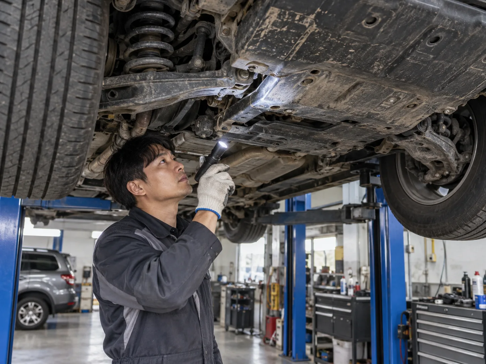
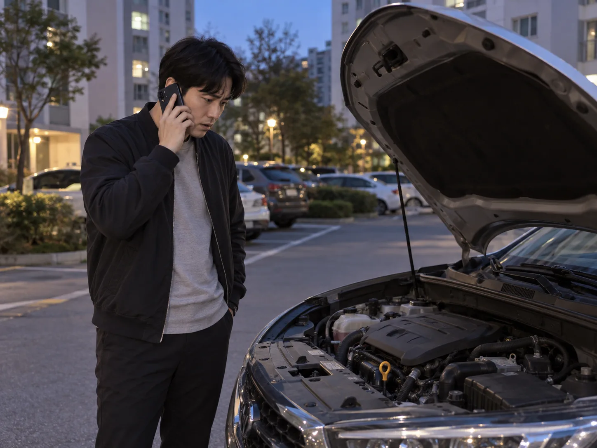

▲ 추석 연휴 귀성·귀경길 장거리 운전을 마쳤다면, 짐을 풀기 전 차량 상태부터 확인하는 것이 좋다
귀경길 끝에 집 주차장에 차를 세우는 순간, 대부분의 운전자는 '드디어 끝났다'며 안도한다. 하지만 장거리 운전과 명절 특유의 정체 구간을 함께 견딘 차량은, 짐을 내리기 전 5분만 투자해 상태를 점검해볼 필요가 있다.
추석을 앞두고는 출발 전 점검을 강조하는 정보가 쏟아지지만, 정작 왕복 수백 킬로미터를 달리고 정체 구간에서 에어컨을 켠 채 몇 시간씩 서 있던 차량이 어떤 상태가 됐는지는 상대적으로 덜 다뤄진다. 사후 점검은 다음 외출, 특히 곧 이어질 일상 출퇴근이나 남은 연휴 나들이를 안전하게 만드는 마지막 단계다.
1. 타이어와 브레이크 — 정체 구간이 남긴 흔적부터 확인
명절 정체는 가다 서다를 반복하는 저속 주행이 길게 이어지는 구간이다. 이 과정에서 타이어와 브레이크는 평소보다 훨씬 많은 부담을 떠안는다. 귀가 직후 타이어가 식은 상태에서 공기압을 다시 재보고, 탑승 인원과 짐이 많았던 만큼 마모 상태와 옆면 손상, 트레드에 박힌 이물질이 없는지 육안으로 확인하자.

▲ 장거리 주행 후에는 타이어가 식은 상태에서 공기압과 마모 상태를 다시 확인하는 것이 정확하다 ⓒ CarPrism
📍 브레이크, 소음과 페달감을 함께 본다
정체 구간에서 가다 서다를 반복하면 브레이크 패드 마모가 평소보다 빠르게 진행될 수 있다. 제동 시 '끼익' 하는 금속성 소음이 나거나, 페달을 밟았을 때 예전보다 더 깊이 들어가거나 반대로 딱딱하게 느껴진다면 패드 두께와 브레이크액 상태를 정비소에서 확인받는 것이 안전하다.

▲ 성묘·벌초 등으로 비포장길을 지나왔다면 하부 패널과 서스펜션 부위를 별도로 점검할 필요가 있다 ⓒ CarPrism (AI 생성 이미지)
2. 하부 점검 — 성묘·벌초길 비포장 주행의 흔적
연휴 기간 성묘나 벌초를 위해 비포장도로나 흙길을 주행했다면, 세차와 함께 차량 하부 상태를 반드시 확인해야 한다. 시골길이나 산길에는 돌출된 돌, 움푹 팬 구덩이가 많아 하부 패널이나 배기관, 서스펜션 부품이 충격을 받았을 가능성이 있다.
✅ 하부 점검 시 확인할 것
· 세차 과정에서 하부 패널에 긁힘·찌그러짐·탈락이 있는지 살펴보기
· 주차해둔 자리 바닥에 오일이나 냉각수가 새어 나온 흔적(얼룩)이 없는지 확인
· 저속 주행 중 바닥에서 긁히거나 덜컹이는 소리가 새로 생기지 않았는지 체크
· 방지턱이나 과속턱을 세게 넘은 기억이 있다면 휠얼라인먼트 틀어짐 여부도 함께 점검
하부 손상이 의심되면 가까운 정비소에서 리프트로 들어 올려 직접 확인받는 것이 가장 확실하다. 관련 기사 바로가기
3. 냉각계통·배터리 — 정체 중 에어컨 과부하가 남긴 부담
명절 정체 구간의 특징은 '저속 주행'과 '장시간 공회전에 가까운 운행'이 겹친다는 점이다. 여기에 에어컨과 내비게이션, 블랙박스 등 전장품 사용이 늘어나면서 냉각계통과 배터리에 걸리는 부담이 평소보다 훨씬 커진다.
📍 정체 중 에어컨, 왜 더 부담이 될까
정체 구간에서는 차량 속도가 낮아 주행풍에 의한 자연 냉각 효과가 줄어드는데, 엔진은 계속 열을 내고 에어컨 컴프레서까지 작동하면서 냉각계통에 가해지는 부하가 누적된다. 여기에 정차 중 시동을 끄지 않고 전장품을 오래 켜두면 배터리 방전으로 이어지기도 쉽다.

▲ 냉각수 보조탱크. 정체 구간에서 에어컨을 오래 켠 날일수록 잔량과 색상을 다시 확인해두는 것이 좋다 ⓒ CarPrism
✅ 귀가 후 냉각계통·배터리 체크
· 엔진이 완전히 식은 뒤 냉각수 보조탱크 잔량이 최소·최대 눈금 사이에 있는지 확인
· 최근 시동이 평소보다 늦게 걸리거나 크랭킹 소리가 약해졌는지 체크
· 정체 중 시동을 끈 채 전장품을 장시간 사용했다면 배터리 방전 가능성을 염두에 둘 것
· 계기판에 수온 경고등이 잠깐이라도 들어왔던 기억이 있다면 반드시 정비소 점검 예약

▲ 귀가 후 시동이 걸리지 않는다면 무리하게 반복 시도하기보다 긴급출동 서비스를 부르는 편이 배터리와 시동모터 손상을 막는다 ⓒ CarPrism (AI 생성 이미지)
4. 경고등·소음·냄새 — 발견 순서대로 대처하기
운행 중이나 귀가 후 이상 증상을 발견했다면, 증상의 종류에 따라 대응 우선순위가 다르다. 모든 경고등이 같은 위험도를 뜻하지 않기 때문에, 색상과 증상을 구분해서 판단하는 것이 중요하다.
| 증상 | 대처 |
|---|---|
| 빨간색 경고등(오일압, 냉각수온 등) | 즉시 안전한 곳에 정차 후 시동을 끄고 점검·견인 요청 |
| 탄내·기름 냄새·흰 연기/검은 연기 | 즉시 정차 — 엔진 과열, 오일·냉각수 누유 가능성 |
| 엔진 경고등 점멸(깜빡임) | 실화(미스파이어) 의심 — 즉시 정차 후 전문가 확인, 계속 주행 시 촉매 손상 위험 |
| 노란색/주황색 경고등 | 당장 위험하진 않지만 방치 금지 — 가까운 시일 내 정비소 방문 |
| 제동·조향 시 소음 | 경고등이 없어도 정비소에서 패드·베어링 등 점검 권장 |
📍 경고등이 꺼졌다고 안심하지 말 것
정체 구간에서 잠깐 켜졌다 꺼진 경고등도 무시해선 안 된다. 특히 수온 경고등이나 배터리 경고등이 한 번이라도 점등된 적이 있다면, 겉보기에 멀쩡해 보여도 냉각계통이나 충전계통에 이상이 남아있을 수 있어 정비소 점검을 받아보는 것이 안전하다.
5. 무상점검 서비스, 연휴 후에도 활용할 수 있을까
매년 추석을 앞두고 현대차·기아·제네시스를 비롯한 완성차 업체들이 진행하는 무상점검 서비스는 대부분 연휴 직전에 집중된다. 2026년의 경우 현대차·기아·제네시스가 9월 21일부터 23일까지 사흘간 전국 서비스 거점에서 특별 무상점검을 진행했는데, 현대차·제네시스 고객은 전국 블루핸즈 1203개소(직영 하이테크센터 제외), 기아 고객은 전국 오토큐 750개소(직영 서비스센터 제외)를 방문해 사전에 발급받은 쿠폰을 제시하면 오일류·냉각수·배터리·타이어 마모도 및 공기압·공조장치·등화장치·브레이크 패드·워셔액 등을 무상으로 점검받을 수 있었다. 하지만 점검을 받지 못하고 연휴를 보냈거나, 연휴 중 이상 증상을 느꼈다면 연휴 이후에도 각 브랜드 서비스센터를 통해 유상 점검을 받거나, 보증기간 내라면 무상 수리 대상인지 문의해볼 수 있다.
✅ 연휴 직후 정비소 방문이 필요한 경우
· 주행 중 경고등이 점등됐던 기록이 있는 경우
· 브레이크·조향 시 새로운 소음이나 진동이 느껴지는 경우
· 하부 충격이 의심되지만 육안으로 손상 여부를 판단하기 어려운 경우
· 시동 지연 등 배터리 이상 징후가 있는 경우
· 다음 장거리 이동(추석 이후 명절·여행) 전 예방 차원에서 점검받고 싶은 경우
6. 요약
추석 연휴 장거리 운전과 정체 구간 주행을 마친 차량은, 출발 전 점검 못지않게 귀가 후 점검이 중요하다. 타이어는 식은 상태에서 공기압과 마모를, 브레이크는 소음과 페달감을, 하부는 비포장길 충격과 누유 흔적을 확인하자.
정체 중 에어컨을 오래 켰다면 냉각계통과 배터리에도 부담이 누적됐을 수 있다. 경고등이나 이상한 소음·냄새를 느꼈다면 색상과 증상에 따라 우선순위를 정해 대응하고, 빨간 경고등·탄내·흰 연기처럼 즉시 정차가 필요한 신호는 절대 미루지 말아야 한다.
연휴가 끝났다고 점검의 필요성까지 끝난 것은 아니다. 짐을 풀기 전 5분의 점검이 다음 외출과 남은 연휴 일정을 더 안전하게 만들어준다.